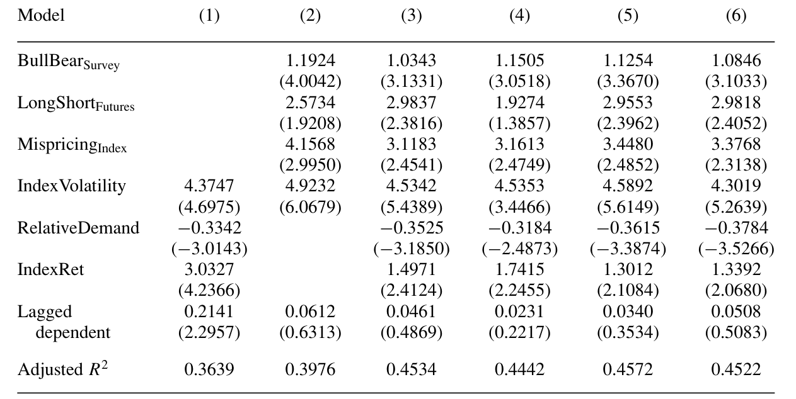
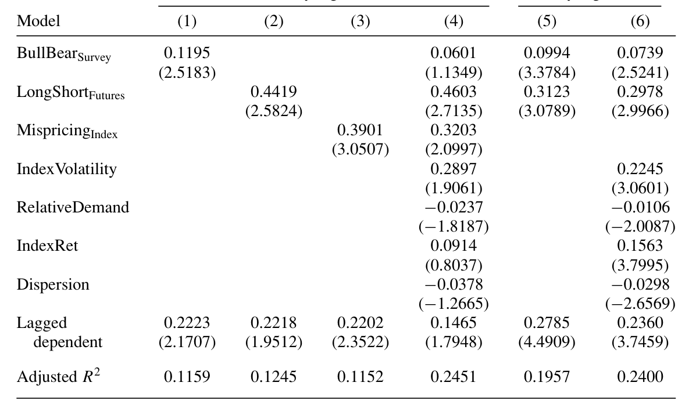
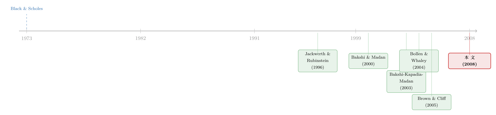

情绪会给「微笑」加多少弧度？——把投资者情绪写进期权价格
本文读的是 Han (2008, Review of Financial Studies)：当市场情绪转向悲观（乐观）时，S&P 500 指数期权的「波动率微笑」会变得更陡（更平），等价地，从期权价格里反推出来的指数月度收益的 风险中性偏度 (risk-neutral skewness) 会变得更负（更不负）。这种关系在控制了一整套「理性」因子之后依然显著，并且在套利越受限的时候越强——它无法被传统的、理性的、完美市场下的期权定价模型解释。
1 一张「不该存在」的微笑
先从一个 Black-Scholes 留下的尴尬说起。
按照 Black 和 Scholes (1973) 的理论，同一标的、同一到期日的期权，无论行权价高低，反推出来的隐含波动率 (implied volatility) 都应该是同一个数——因为那个数就是标的资产的波动率，它和行权价没关系。可现实里偏偏不是这样。Jackwerth 和 Rubinstein (1996) 在 S&P 500 期权上发现了一条非常显眼的「微笑」（更准确地说是「冷笑」，smirk）：隐含波动率随着行权价单调下降，低行权价的看跌期权贵得离谱。这条曲线和 BS 理论的「一条水平线」形成了刺眼的对比。
人们当然想办法去补救。在理性的、有代表性投资者的、完美市场的框架里，给 BS 模型加上随机波动率、加上跳跃，确实能把期权数据拟合得更好（Bakshi, Cao, and Chen, 1997；Pan, 2002）。但麻烦在于：要把微笑拟合出来，模型往往得把参数设到一些「不合理」的取值上，这些取值和标的资产时间序列里真实的波动率、跳跃过程对不上（Bates, 2000）。更进一步，一批文献开始指出，相对于一大类理性期权定价模型，S&P 500 期权干脆就是被「错误定价」了（Jackwerth, 2000；Ait-Sahalia, Wang, and Yared, 2001；Bondarenko, 2003；Constantinides, Jackwerth, and Perrakis, 2005）。
于是一个自然的问题浮出水面：如果不在「理性」的框子里继续添参数，而是承认 投资者情绪 (investor sentiment) ——也就是投资者信念里那部分系统性的、加总后不为零的错误——本身就在影响期权价格，会怎么样？
这正是本文的切入口。但它没有去问那个被问烂了的问题（「期权平均被高估还是低估了多少」），而是盯住了一个动态的现象：Bollen 和 Whaley (2004) 发现，微笑的斜率会从一个月到下一个月剧烈变化。本文要回答的是——微笑斜率的这种时间变化，是不是被市场情绪的变化牵着走的？
把「微笑变陡」翻译成「偏度变负」，是这篇文章四两拨千斤的一步。微笑的斜率是个看得见摸得着、却不好直接做时间序列的对象；而它在数学上几乎等价于风险中性分布的负偏度（Bakshi, Kapadia, and Madan, 2003）。换一把尺子，整个问题就从「曲线形状」变成了「一个数随时间怎么动」。
2 把「微笑」拧成一个数：无模型的风险中性偏度
要做时间序列回归，先得有一个能逐月算出来的标量。本文用的是 Bakshi 和 Madan (2000) 以及 Bakshi, Kapadia, and Madan (2003)（下称 BKM）提出的 无模型 (model-free) 风险中性偏度。
它的思想其实很漂亮。Bakshi 和 Madan (2000) 证明：任何「期望有界」的收益函数，都可以用一篮子虚值 (out-of-the-money, OTM) 的欧式看涨和看跌期权复制出来。既然如此，收益率分布的各阶矩——本质上是收益率某个幂函数的期望——也就可以由当天那一截面的期权价格直接「读」出来，完全不需要假设任何状态变量或定价核的函数形式。（关于「从期权价格里反推分布」这件事更激进的版本，可参见《把未来的概率从期权价格里「读」出来》 和 《把概率从期权价格里「凭空」捞出来——Ross 复原定理的一次实证审判》。）
具体地，在日期 \(t\)、对未来 \([t, t+\tau]\) 期间的指数收益，风险中性偏度由下式给出：
其中风险中性均值由方差、立方、四次合约的价格修正而来：
$$\mu(t,\tau)=e^{r\tau}-1-\frac{e^{r\tau}}{2}V(t,\tau)-\frac{e^{r\tau}}{6}W(t,\tau)-\frac{e^{r\tau}}{24}X(t,\tau)$$
而 \(V\)、\(W\)、\(X\) 分别是「方差合约」「立方合约」「四次合约」的价格，每一个都是 OTM 看涨期权价格 \(C(t,\tau,K)\) 与看跌期权价格 \(P(t,\tau,K)\) 的加权积分。以方差合约 \(V\) 为例：
$$V(t,\tau)=\int_{S_t}^{\infty}\frac{2\left(1-\ln\frac{K}{S_t}\right)}{K^2}\,C(t,\tau,K)\,dK+\int_{0}^{S_t}\frac{2\left(1+\ln\frac{S_t}{K}\right)}{K^2}\,P(t,\tau,K)\,dK$$
立方合约 \(W\) 的权重则带上了 \(\ln(K/S_t)\) 的一次和二次项，正是这一项让它去捕捉分布的不对称性：
$$W(t,\tau)=\int_{S_t}^{\infty}\frac{6\ln\frac{K}{S_t}-3\left(\ln\frac{K}{S_t}\right)^2}{K^2}\,C(t,\tau,K)\,dK-\int_{0}^{S_t}\frac{6\ln\frac{S_t}{K}+3\left(\ln\frac{S_t}{K}\right)^2}{K^2}\,P(t,\tau,K)\,dK$$
这套公式的妙处，在于它只用当天截面的期权价格，就给出了一个对未来收益条件偏度的事前 (ex-ante) 估计——它把投资者对未来指数水平的预期，连同他们的情绪，一并编码了进去。实际计算中，本文用每天有正成交量的 OTM 看跌和看涨期权，按梯形法近似上面的积分，取一个月的展望期 \(\tau=1/12\) 年，再对那些没有恰好一个月到期合约的日子做线性插值。
为什么偏度这一个数，能告诉我们这么多？这就要回到本文真正的「核心」——定价核 (pricing kernel)。
3 真正的核心：情绪如何掰弯定价核
把全文拧成一句话，是这样一条因果链：
投资者越悲观 → 越渴望「市场跌时能赔付」的或有索取权 → 愿意为这些低状态下赔付的证券（OTM 看跌）付更高的价 → 定价核在低指数水平处被抬得更高、斜率更陡 → 风险中性偏度更负。
这条链里每一环都值得停一下。Breeden 和 Litzenberger (1978) 早就告诉我们，Arrow-Debreu 状态价格可以从期权价格里推出来；而定价核就是「单位概率的状态价格」。如果情绪扭曲了期权价格，那么状态价格、进而定价核，也会被情绪扭曲——它会依赖于投资者情绪，而不仅仅是实体经济里那些代表风险的状态变量。Cochrane (2001) 早已承认这种可能：定价核可以和实体经济里的边际替代率「脱钩」，而这并不需要存在套利机会。
再加上一个关键的经验事实：月度指数收益的真实（客观测度下的）分布近似对称（Ait-Sahalia and Lo, 1998, 2000；Rosenberg and Engle, 2002）。既然客观分布几乎不偏，那么风险中性偏度里那一坨负的部分，就几乎全部来自定价核的斜率——来自投资者在「市场低位」和「市场高位」之间，对一块钱赔付的相对估值差。于是，研究指数风险中性偏度的决定因素，就等价于在研究定价核斜率的决定因素。
所以本文的识别逻辑，说穿了是一句时间序列的对照：如果投资者情绪真的掰弯了定价核，那么情绪变量和指数风险中性偏度之间，应该存在显著的同期时间序列关系。这就是全文的核心检验假设。
必须说清楚：这不是一个 DiD / IV / RDD 式的因果识别。本文没有外生冲击、没有处理组与控制组。它的「识别」靠的是两件事：一是关系在控制了一大批理性因子后是否还在（排除「情绪只是理性变量的影子」），二是关系是否在套利越受限时越强（这正是行为机制该有的横截面预测）。读者在评估可信度时，应当把它放在「行为资产定价的时间序列证据」这一档，而不是「准实验」那一档。
值得一提的是，本文这种「从每天截面里抽取定价核斜率的条件信息」的做法，和前人很不一样：Ait-Sahalia 和 Lo (1998) 用面板数据做非参数估计，得到的是一个无条件、平均的定价核；Rosenberg 和 Engle (2002) 虽然估的是时变定价核，却要事先对定价核的函数形式做参数假设。本文则不对定价核做任何参数假设，直接让数据说话。
4 数据与情绪的三把尺子
期权数据来自芝加哥期权交易所 (CBOE) 的 S&P 500 指数期权（代码 SPX），欧式、现金结算，日频，样本期 1988 年 1 月 4 日至 1997 年 6 月 24 日。本文沿用 Ait-Sahalia and Lo (1998)、Dumas, Fleming, and Whaley (1998)、Poteshman (2001) 的做法，用最接近平值的看涨看跌期权、借助看跌看涨平价 (put-call parity) 推出每个到期日的隐含期货价，再用现货-期货关系折出分红调整后的指数水平 \(S\)。剔除违反无套利下界的观测、价格低于 $1/8 美元的观测、以及到期不足一周或超过一年的合约。月末对齐后，每个变量有 114 个月度观测。
样本里指数风险中性偏度的均值是 −1.6475，标准差高达 0.6181——也就是说，这个偏度在月与月之间剧烈摆动，这恰恰为「它被某种时变因素驱动」留出了空间。
情绪用了三把尺子，而且本文有意只盯「大（机构）投资者」，因为他们才主导着指数期权市场（Bates, 2003；Lakonishok et al., 2007）：
BullBearSurvey（牛熊价差）：基于 Investors Intelligence 对约 150 份投资通讯的每周调查，看多者比例减看空者比例。沿用 Brown and Cliff (2004, 2005)，它代表机构类大投资者的情绪。均值0.0370。LongShortFutures（大投机者净头寸）：来自 CFTC 的「交易者持仓报告」，S&P 500 期货里「非商业」交易者（即大投机者）的多头合约数减空头合约数，再除以总未平仓量。均值−0.0638。MispricingIndex（估值误差）：Sharpe (2002) 算的 S&P 500 相对 Campbell 和 Shiller (1988) 对数线性增长模型预测水平的偏离。正值代表高估。均值−0.0157。
这三把尺子彼此正相关（牛熊价差与期货净头寸相关 0.26；二者与估值误差分别相关 0.35 和 0.15），而且都和指数风险中性偏度同步起伏——相关系数在 0.29 到 0.48 之间。图像上的「齐步走」已经很有暗示性，但真正的检验在回归里。
5 主要结果：情绪确实在给微笑加弧度
基准回归。 把指数风险中性偏度对各情绪代理变量回归（含滞后因变量控制持续性，标准误按 Newey and West (1987) 调整），结果是一致的正号、且大多显著：
BullBearSurvey的系数为0.9793（t =3.01）；MispricingIndex的系数为5.2963（t =3.46）；LongShortFutures的系数为2.4612（t =1.92），稍弱但符号一致。
也就是说，情绪越乐观（牛熊价差越高、市场越被高估、大投机者越偏多），偏度就越不那么负（微笑越平）；情绪越悲观，偏度越负、微笑越陡。模型的调整 \(R^2\) 在 0.18–0.26 之间。为了打消「这只是两个高度自相关序列碰巧同涨同跌」的疑虑，本文还把双方都做 AR(1) 残差后再回归（Panel B）：去掉持续性成分之后，BullBearSurvey 的系数反而升到 1.1844（t = 3.05），关系依旧稳健。
它不是理性因子的影子。 一个聪明读者立刻会问：会不会情绪代理只是在替某个理性的风险因子打工？本文于是塞进一组可能与情绪相关、也可能与偏度相关的「理性」控制变量（指数波动率、过去六个月指数收益、期权成交量等）。结论是：在控制了这些之后，情绪与风险中性偏度之间依然存在显著为正的关系。

Table 3: show that there is still a positive and statistically significant relation
套利越受限，关系越强。 这一步是行为解释的「试金石」。如果情绪能影响价格，那它一定是趁着套利者被绑住了手脚才得逞的。本文据此把样本按指数期权市场的套利障碍切开，发现情绪-偏度关系在套利障碍更大的时候更强——这正是「限制套利 (limits to arbitrage)」机制该留下的指纹，理性定价模型给不出这样的横截面差异。
最后，回到微笑本身。 既然偏度和微笑斜率几乎等价，那把因变量直接换成微笑斜率 (SmileSlope，均值 −1.2194) 应该得到一致的图景。结果正如表 7 所示：无论月度还是周度回归，情绪都显著地驱动着微笑的斜率——情绪越悲观，微笑越陡。两个频率上结论一致，让这个发现更让人放心。

Table 7: shows that in both monthly and weekly regressions, the sentiment
到这里，全文的「一个核心」已经讲透了：情绪不是停在股票收益里的一个模糊噪声，它实实在在地坐进了指数期权的价格里，掰弯了定价核的斜率。 这也呼应了 Ait-Sahalia, Wang, and Yared (2001) 那个著名的反常——把期权隐含的状态价格密度偏度，对时间序列估出来的状态价格密度偏度做回归，斜率本应等于 1（若投资者理性且知道指数动态），实际却是一个不显著的负数。这个对不上的结果，用「情绪重要地影响了期权价格」来解释，反而顺理成章。
6 文献脉络
把这条线捋一遍，会看到一段「从拟合曲线，到承认情绪」的位移。
最开始是 Black 和 Scholes (1973) 的常数波动率世界；Jackwerth 和 Rubinstein (1996) 在数据里发现了那条不该存在的微笑，掀开了序幕。接着，一路人马在理性框架内修补——加随机波动率、加跳跃（Bakshi, Cao, and Chen, 1997；Pan, 2002）——另一路人马（Jackwerth, 2000；Ait-Sahalia, Wang, and Yared, 2001；Bondarenko, 2003）则越来越坚定地指出：相对一大类理性模型，指数期权就是被错误定价了。
然后，两件「工具性」的进展铺好了路：一是 Bakshi 和 Madan (2000)、Bakshi, Kapadia, and Madan (2003) 把风险中性偏度做成了无模型、可逐日提取的标量；二是 Brown 和 Cliff (2004, 2005) 把机构投资者情绪做成了可用的时间序列代理。与此同时，Bollen 和 Whaley (2004) 记录了微笑斜率的剧烈时变，把「斜率为什么动」这个问题摆上了桌面。

本文正是站在这两条支流的交汇处：它借 BKM 的尺子量偏度、借 Brown-Cliff 的尺子量情绪，第一次把「情绪驱动微笑斜率的时变」这件事做成了干净的时间序列证据，并赋予它一个定价核的解释。它和 Poteshman (2001) 那种「期权市场对波动率信息反应过度/不足」的工作是互补的——后者讲的是对波动率的行为偏差，本文讲的则是对指数水平的情绪。（关于偏度本身作为横截面预测因子的角色，可参见《市场的下一步，藏在一万只股票的「歪斜」里》；关于需求压力如何重塑隐含波动率曲面这一更现代的视角，可参见《当波动率曲面被「散户」推歪》 与《每一张期权背后，站着一个怎样的投资者？》。）
7 评论与延伸（Q&A + 研究方向）
(a) 几个可能的疑问
Q：「风险中性偏度变负」和「微笑变陡」到底是不是一回事？为什么要绕这一道？
近似等价，但不是定义上的恒等。微笑斜率是隐含波动率对行权价的经验斜率，风险中性偏度是分布的三阶标准矩；BKM 证明了二者的紧密对应。绕道偏度的好处有二：偏度是无模型的、可严格逐日提取的标量，适合做时间序列；而且偏度直接对应定价核斜率，给了机制一个干净的经济学落点。本文最后又把微笑斜率本身做了一遍回归（表 7），正是为了证明这层「翻译」没有丢信息。
Q：客观分布近似对称这个前提，靠得住吗？它是整条逻辑的承重墙。
这是全文最关键、也最该被盯住的假设。它来自 Ait-Sahalia and Lo (1998, 2000) 和 Rosenberg and Engle (2002)。若客观月度分布其实有显著负偏，那么风险中性偏度里就未必全是定价核斜率，部分可能反映真实的、理性的灾难风险。本文的稳健性（控制理性因子、套利障碍异质性）是在间接地为这堵墙加固，但它确实是承重墙——这也是我后面「想看到什么」的重点。
Q：三个情绪代理都和偏度正相关，会不会只是「两个高自相关序列的伪回归」？
这正是 Panel B 做 AR(1) 残差回归要回应的。去掉各自的持续性成分后，牛熊价差的系数不降反升（从 0.98 到 1.18，t = 3.05），说明驱动力来自情绪的创新（变化）而非共同趋势，伪回归的担忧被大幅削弱。
Q：为什么只看机构/大投资者情绪，把散户情绪扔掉了？
因为指数期权市场由机构主导（Bates, 2003；Lakonishok et al., 2007），散户不是重要参与者。本文早期版本里也试过散户情绪（AAII 调查），发现它与指数风险中性偏度无显著关系，且加进去不改变机构情绪的结论。这是个合理的、由市场结构决定的取舍。
Q：这能算「错误定价」吗？会不会只是一个被情绪驱动、但仍然理性的风险溢价？
本文的立场是：传统的、理性的、完美市场期权定价模型解释不了这些关系，而 Cochrane (2001) 指出定价核可以与实体经济边际替代率脱钩、却不构成套利。所以它更像是「情绪进入了定价核」而非「无风险套利机会」。是否给它贴上「错误定价」的标签，部分是措辞之争；但「理性风险溢价」很难解释为什么关系在套利障碍大时更强。
Q：1988–1997 这段样本，会不会被 1987 后那几年的特殊性主导？
样本起点紧接 1987 年崩盘，那之后看跌期权系统性变贵（「崩盘恐惧」）是公认事实（Bates, 2000）。本文识别的是斜率随情绪的时间变化，而非斜率的平均水平，所以崩盘恐惧的「常数项」部分不太会污染结论；但样本只有 114 个月、且止于 1997，外部有效性（尤其是 2008 之后做市商资本约束主导的年代）需要谨慎。
(b) 几个可能的研究问题与提案
1. 把这套逻辑搬到公司债 / 信用市场的「偏度」上。 - 【经济故事】公司债收益的下尾风险（违约、流动性骤停）本身高度不对称，若情绪同样能掰弯信用市场的定价核，那么从信用违约互换 (CDS) 或债券期权里提取的风险中性偏度，应随情绪同向起伏，且在套利受限的高收益段更强。 - 【可行性】中。CDS 期权样本薄、流动性差是硬伤；可退而用 CDS 期限结构或债券隐含的下尾保护价格做代理。识别仍是时间序列+套利障碍异质性，难做成准实验。
2. 外资持有人的情绪，是否给本国指数期权的偏度「另开一条暗线」？ - 【经济故事】若外资和本土机构的情绪不同步，二者对 OTM 看跌的需求会在定价核上叠加出不同的斜率成分。把情绪按投资者国籍拆开，看谁主导了偏度的时变，是对本文「只看大投资者」的自然细化。 - 【可行性】中低。难点在于把期权需求按持有人国籍分解——交易所层面的持仓很少带国籍标签；可能要借道托管行数据或特定市场（如部分亚洲指数期权）的披露。
3. 做市商资本约束 vs. 情绪：谁在驱动微笑斜率？ - 【经济故事】2008 之后的文献强调中介/做市商资本约束才是期权价格的主导力量。一个干净的「赛马」是：在同一回归里同时放入情绪代理和做市商资本约束代理（如一级交易商杠杆），看情绪的解释力在控制约束后还剩多少。 - 【可行性】高。情绪代理可沿用本文，做市商约束有现成代理；OptionMetrics 把样本延长到近二十年，足以做子样本与交互项。这是把本文「现代化」最直接的一步。
4. 用更高频的事件（如 FOMC、宏观数据公布）识别情绪冲击。 - 【经济故事】本文的月度同期回归终究是相关性。若能找到一个主要改变情绪、却不直接改变基本面下尾风险的外生事件，对事件窗内偏度的跳变做估计，就能向因果再逼近一步。 - 【可行性】中。难点是「只动情绪、不动基本面风险」的排他性很难论证——FOMC 既动情绪也动真实风险。可作为本文识别的补强而非替代。
我的判断。 本文最大的贡献，是把「投资者情绪影响资产价格」这个老命题，从充满噪声的已实现股票收益战场，搬到了信息含量更高的指数期权战场——期权不是冗余证券（Buraschi and Jackwerth, 2001），它提供了关于定价核的、股票市场给不出的事前信息，而且让我们能在同一标的的丰富截面上做相对估值。把情绪、BKM 偏度、定价核斜率三者串成一条逻辑链，干净利落，是这篇文章的高明之处。
但识别的软肋也很清楚。其一，全文是时间序列相关性，不是准实验；「情绪 → 偏度」的因果方向，原则上无法排除「某个未被观测到的、同时驱动情绪与真实下尾风险的第三方」。其二，整条逻辑压在「客观月度分布近似对称」这一前提上——一旦真实分布本身有时变的负偏（这在崩盘恐惧浓厚的年代并非不可能），风险中性偏度里就掺进了理性成分，情绪的份额会被高估。其三，114 个月、止于 1997 的样本，放在今天做市商资本约束主导的市场里，外部有效性需要重新检验。
我最想看到的后续，是上面提案 3 那场「赛马」：在一个延长到 2020 年代的样本里，把情绪和做市商资本约束放进同一个回归，看十几年后，到底是「投资者心里的牛熊」还是「中介手里的资本」，在给那张微笑加弧度。
参考文献
Ait-Sahalia, Y., and A. Lo (1998). Nonparametric Estimation of State-Price Densities Implicit in Financial Asset Prices. Journal of Finance 53, 499–547.
Ait-Sahalia, Y., Y. Wang, and F. Yared (2001). Do Option Markets Correctly Price the Probabilities of Movement of the Underlying Asset? Journal of Financial Economics 102, 67–110.
Bakshi, G., C. Cao, and Z. Chen (1997). Empirical Performance of Alternative Option Pricing Models. Journal of Finance 52, 2003–2049.
Bakshi, G., and D. Madan (2000). Spanning and Derivative Security Valuation. Journal of Financial Economics 55, 205–238.
Bakshi, G., N. Kapadia, and D. Madan (2003). Stock Return Characteristics, Skew Laws, and Differential Pricing of Individual Equity Options. Review of Financial Studies 16, 101–143.
Bates, D. (2000). Post-87 Crash Fears in the S&P 500 Futures Option Market. Journal of Econometrics 94, 181–238.
Black, F., and M. Scholes (1973). The Pricing of Options and Corporate Liabilities. Journal of Political Economy 81, 637–659.
Bollen, N., and R. Whaley (2004). Does Net Buying Pressure Affect the Shape of Implied Volatility Functions? Journal of Finance 59, 711–753.
Breeden, D., and R. Litzenberger (1978). Prices of State-Contingent Claims Implicit in Option Prices. Journal of Business 51, 621–652.
Brown, G., and M. Cliff (2004). Investor Sentiment and the Near-Term Stock Market. Journal of Empirical Finance 11, 1–27.
Brown, G., and M. Cliff (2005). Investor Sentiment and Asset Valuation. Journal of Business 78, 405–440.
Buraschi, A., and J. C. Jackwerth (2001). The Price of a Smile: Hedging and Spanning in Option Markets. Review of Financial Studies 14, 495–527.
Campbell, J., and R. Shiller (1988). Stock Prices, Earnings, and Expected Dividends. Journal of Finance 43, 661–676.
Cochrane, J. (2001). Asset Pricing. Princeton University Press, Princeton, NJ.
Jackwerth, J. C., and M. Rubinstein (1996). Recovering Probability Distributions from Option Prices. Journal of Finance 51, 1611–1631.
Jackwerth, J. C. (2000). Recovering Risk Aversion from Option Prices and Realized Returns. Review of Financial Studies 13, 433–451.
Lakonishok, J., I. Lee, N. Pearson, and A. Poteshman (2007). Option Market Activity. Review of Financial Studies 20, 813–857.
Newey, W., and K. West (1987). A Simple, Positive Semi-Definite, Heteroskedasticity and Autocorrelation Consistent Covariance Matrix. Econometrica 55, 703–708.
Pan, J. (2002). The Jump-Risk Premia Implicit in Options: Evidence from an Integrated Time-Series Study. Journal of Financial Economics 63, 3–50.
Poteshman, A. (2001). Underreaction, Overreaction, and Increasing Misreaction to Information in the Options Market. Journal of Finance 56, 851–876.
Rosenberg, J., and R. Engle (2002). Empirical Pricing Kernels. Journal of Financial Economics 64, 341–372.
Sharpe, S. (2002). Reexamining Stock Valuation and Inflation: The Implications of Analysts' Earnings Forecasts. Review of Economics and Statistics 84, 632–648.